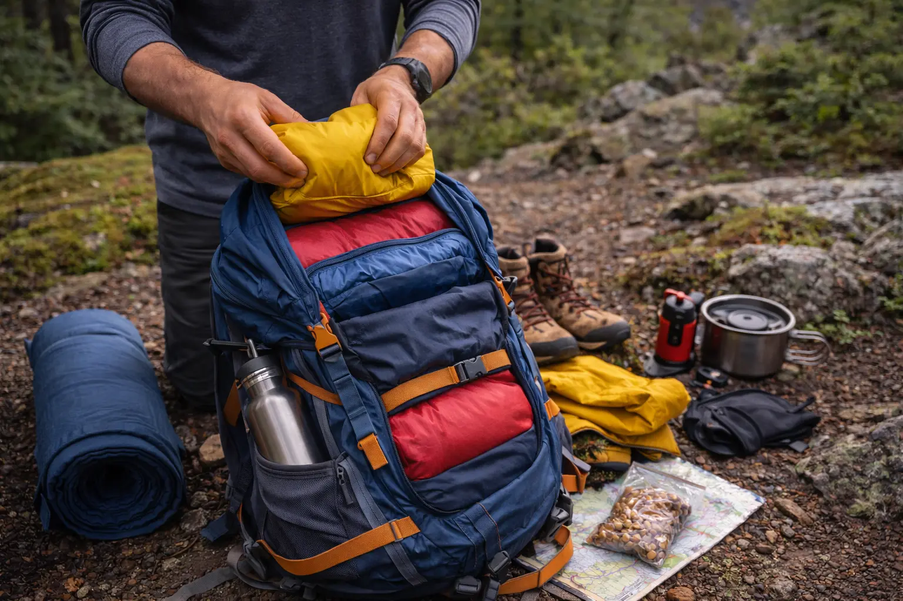

TREK PACKING GUIDE
Packing your backpack properly can make trekking much easier. The right weight distribution keeps your balance steady and reduces strain during long walks.
Packing a trek backpack may seem simple at first — just put everything inside and start walking. But experienced trekkers know that how you pack your backpack can greatly affect your comfort, balance, and energy levels during the trek.
A poorly packed backpack can feel heavier than it actually is. If the weight distribution is uneven or items are difficult to access, you may find yourself constantly stopping, adjusting the bag, or struggling with back and shoulder fatigue.
On the other hand, a well-packed backpack keeps the weight balanced close to your body, making it easier to walk for long hours without discomfort. Proper packing also ensures that important items like water, snacks, or rain protection are easily accessible when you need them.
Whether you're going on a short day trek or a longer adventure, learning how to organize your backpack efficiently can make the entire trekking experience smoother and more enjoyable.
Before packing your gear, it’s important to use a backpack that suits the type of trek you’re planning. The size and design of your backpack can influence both comfort and efficiency.
A properly sized backpack ensures that the load stays close to your body and reduces unnecessary strain on your shoulders and back.

A well-organized backpack makes trekking more comfortable and efficient.
One of the most important principles of packing a trekking backpack is proper weight distribution. The goal is to keep heavier items close to your back and near the center of the bag.
When heavy gear sits too far from your back, it pulls the backpack outward and forces your body to compensate. This can lead to fatigue and poor posture during the trek.
Items like water bottles, food supplies, and heavier gear should be packed near the middle of the backpack and as close to your back as possible. This helps maintain stability and balance while walking on uneven terrain.
Proper weight distribution makes the backpack feel lighter and easier to carry during long hikes.
Another smart packing strategy is organizing items based on how often you will need them during the trek.
This approach reduces the need to open your backpack repeatedly and helps you stay organized during the trek.
Modern trekking backpacks often come with multiple compartments that help organize gear efficiently. Using these compartments wisely can save time and prevent clutter inside the bag.
Packing pouches or small zip bags can be extremely useful for grouping items together. For example, toiletries, electronics, snacks, and medical supplies can each have their own pouch.
This system makes it much easier to locate items quickly without having to empty the entire backpack during the trek.
Good organization also helps protect fragile items and keeps the backpack neat throughout the journey.
Balance is essential when carrying a trekking backpack. If one side of the bag is significantly heavier than the other, it can cause discomfort and make walking on uneven trails more difficult.
Try to distribute weight evenly between the left and right sides of the backpack. When packing side pockets, ensure both sides carry similar weight whenever possible.
Once your bag is packed, adjust the shoulder straps, chest strap, and waist belt properly. The waist belt should carry a portion of the weight so that your shoulders do not bear the entire load.
A well-balanced backpack improves stability and makes long treks much more comfortable.
One of the most common mistakes beginner trekkers make is carrying too many unnecessary items. Every extra kilogram in your backpack becomes noticeable during long climbs or extended hikes.
Before packing, ask yourself whether each item is truly necessary for the trek. Prioritize essentials such as water, food, safety gear, and weather protection.
Carrying fewer items not only makes the trek physically easier but also allows you to move more freely on challenging trails.
Remember that trekking is about simplicity — the lighter your backpack, the more enjoyable your journey will be.
Before starting your trek, wear your packed backpack and walk around for a few minutes. This helps you check if the weight feels balanced and comfortable. Small adjustments before the trek can prevent discomfort later on the trail.
Join the Mototrek community and explore beautiful trails with experienced trek leaders.
VIEW UPCOMING TREKS